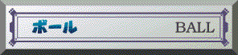
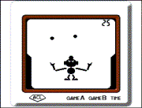
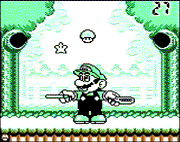

 ●むかしモード 円を描くように右や左に飛ぶボール。目が回りそうなスピード。シンプルなゲームの中におもしろさが十分詰まっています。 ★上達へのコツ ボールを一度落とすとゲームオーバーです。ボールを落とさないように、ボールの動き、手の位置を十分に見極めましょう。  ●いまモード きのこやスターが空中を舞っています。テニスラケットを使ってうまく跳ね飛ばしましょう。 ★上達へのコツ 空中を舞うキャラクターが大きくて、どこに落ちてくるか軌道がわかりずらいので注意しましょう。一度のミスでゲームオーバーなので慎重にプレイしましょう。 |
  |